class Sentiment(BaseModel): label: Literal['positive', 'negative', 'neutral'] score: float = Field(ge=-1, le=1) @dataclass class Deps: customer_name: str reviews = Capability[Deps](id='reviews') @reviews.tool def recent_reviews(ctx: RunContext[Deps], product: str): """Fetch recent review snippets.""" ... agent = Agent( "anthropic:claude-sonnet-5-5", output_type=Sentiment, deps_type=Deps, retries=3, capabilities=[reviews], )